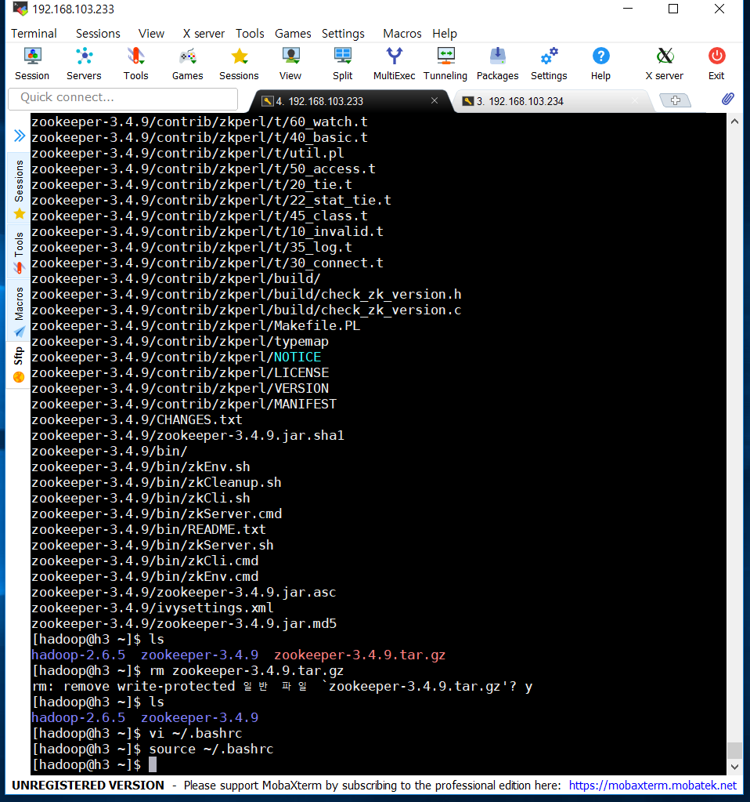
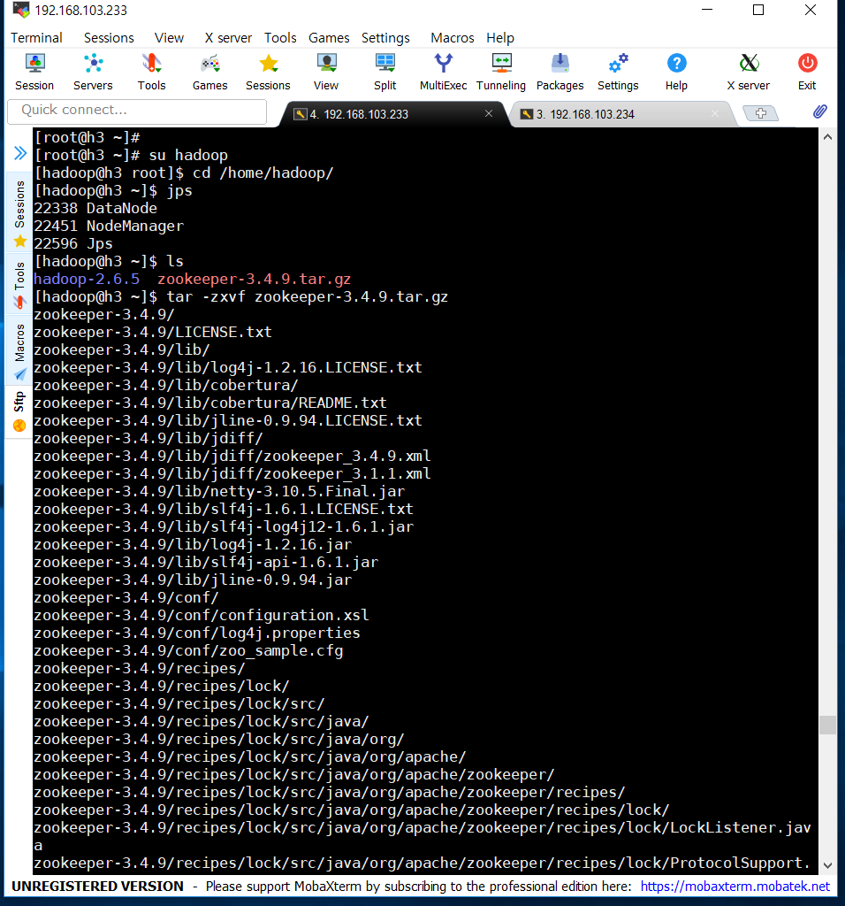
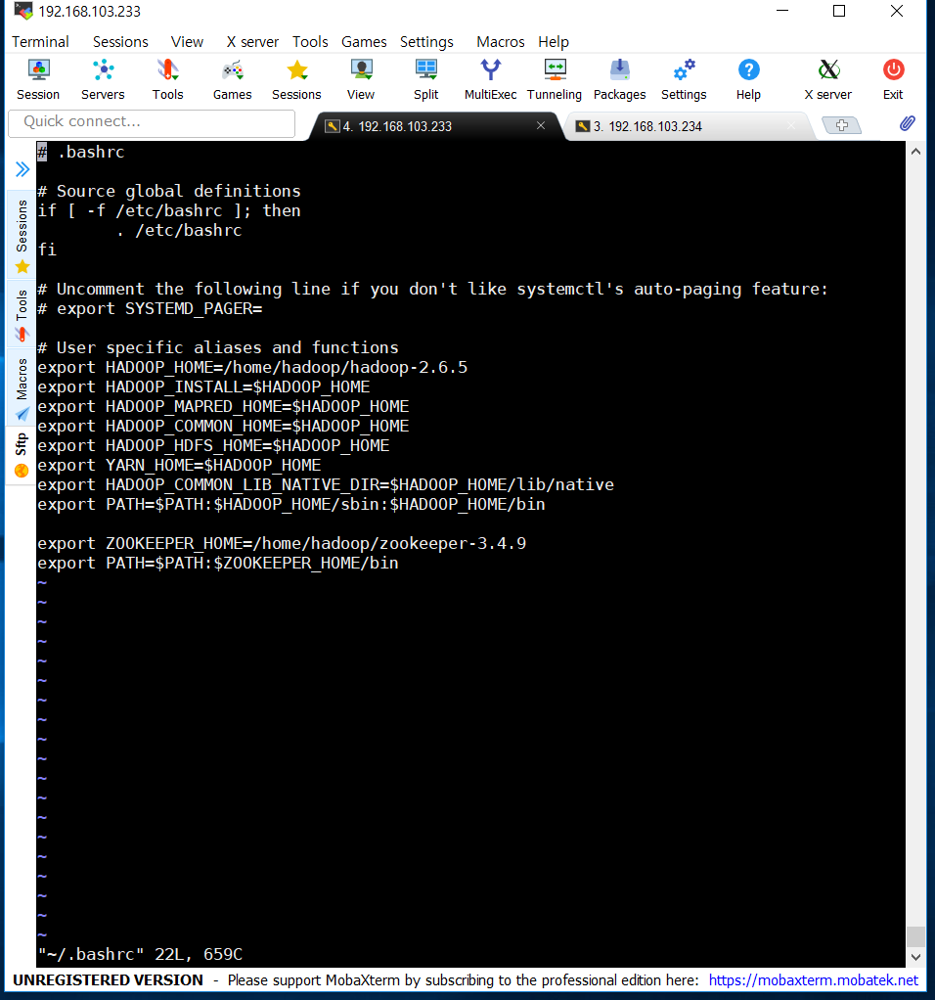
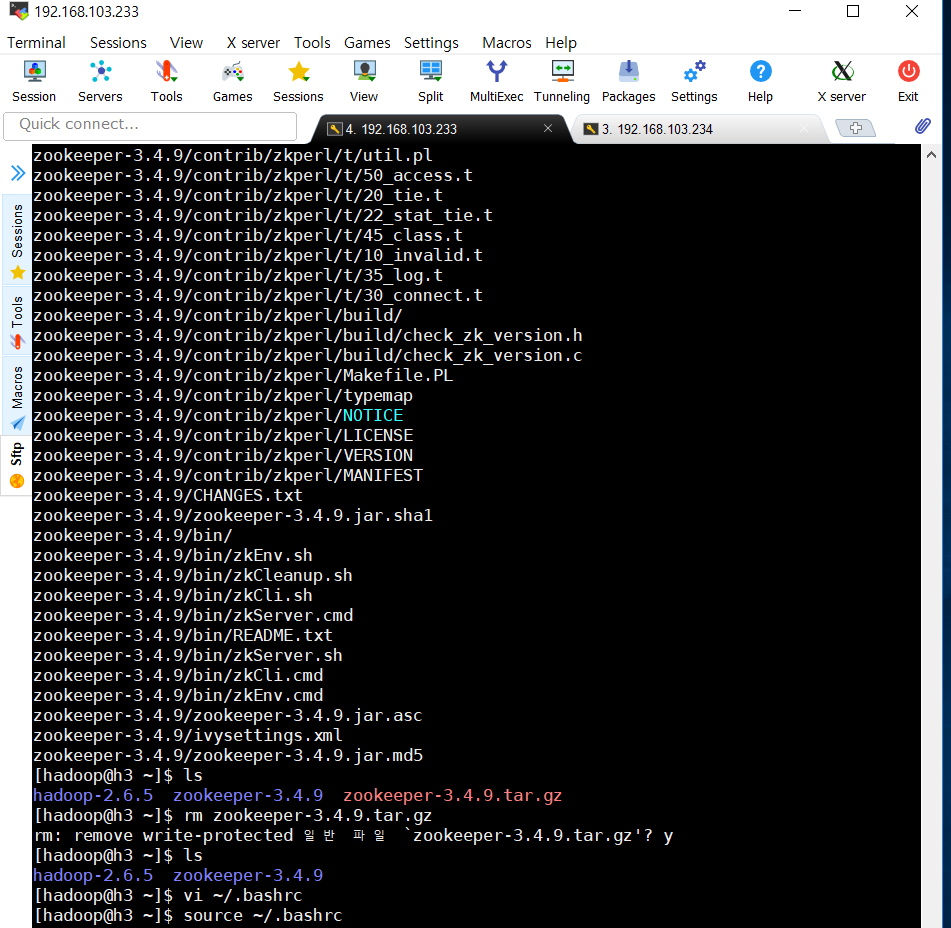
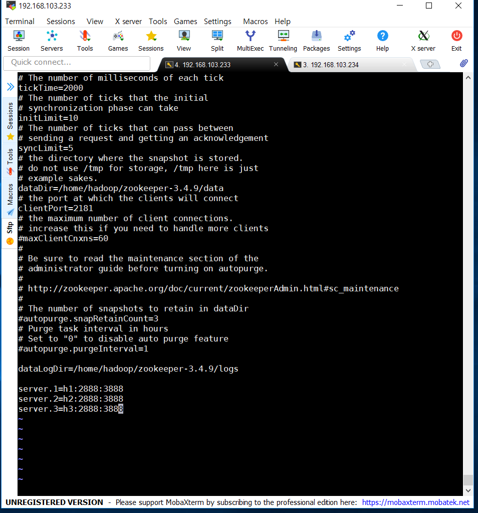
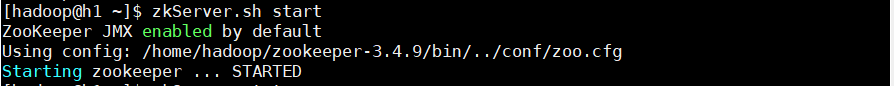
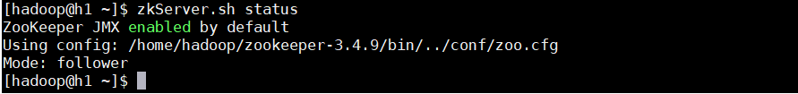

Hadoop and Hadoop-related software : Zookeeper
참고사이트 링크 ☞☞ Zookeeper site
Zookeeper 란?
수십~수천 대의 서버에 설치돼 있는 빅데이터 분산환경을 더욱 효율적으로 관리하기 위해서는 서버 간의 정보를 쉽고 안전하게 공유해야 한다.
공유된 정보를 이용해 서버 간의 중요한 이벤트(분산락, 순서제어, 부하분산, 네임서비스 등)를 관리하면서 상호작용을 조율해주는 코디네이터 시스템이 필요한데
이것이 바로 분산 코디네이터인 아파치 주키퍼 이다.
주키퍼 설치하기
1. 주키퍼를 다운받고, 압축을 풀어줍니다.


2. vi ~/.bashrc 에서 다음과 같이 편집하고, source ~/.bashrc로 적용해 줍니다.


3. zoo.cfg 파일을 아래와 같이 편집해 줍니다.

4. 주키퍼 시작, 상태확인을 합니다.

